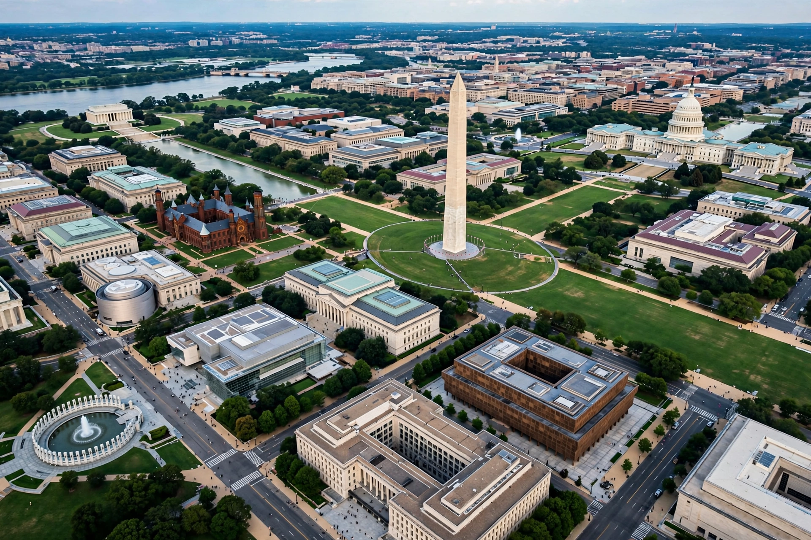

The National Mall is a landscaped national park in downtown Washington, D.C., administered by the National Park Service. It stretches from the United States Capitol west to the Lincoln Memorial, with the Washington Monument near its centre, and is lined by Smithsonian museums.

Pierre L'Enfant envisioned a grand avenue; the Mall took shape under the McMillan Plan, which cleared railways and gardens for an open greensward flanked by elms and cultural buildings.
From east to west: the Capitol, Ulysses S. Grant Memorial, National Gallery of Art, museums of Natural History and American History, the Washington Monument, World War II Memorial, Reflecting Pool, Korean War and Vietnam Veterans Memorials, and the Lincoln Memorial. The White House lies north via the Ellipse.
The Mall is America's premier civic stage — inaugurations, festivals such as the Smithsonian Folklife Festival, and historic gatherings including the 1963 March on Washington and Martin Luther King Jr.'s "I Have a Dream" speech at the Lincoln Memorial.